โหมด
3
3
Empire Granite · เดินระบบจริงครบกระบวนการ
โหมด 3: ตัดตามสั่ง
(Cut-to-Order)
(Cut-to-Order)
จำลองสถานการณ์จริงตั้งแต่มี Block พร้อมอยู่แล้วในสต็อก ยืนยันคำสั่งขายทั้งที่ยังไม่มีแผ่นหินจริง ให้ระบบขึ้นคิวงานให้ฝ่ายผลิตอัตโนมัติที่หน้า "Factory Worklist" เลือกก้อนหินและกำหนดขนาดที่จะตัดเอง ผ่านใบสั่งผลิต จนถึงคำนวณราคาอัตโนมัติและออกใบแจ้งหนี้ — ฝ่ายขายไม่ต้องเป็นผู้ตัดสินใจว่าจะตัดจากก้อนไหน (ขั้นตอนสั่งซื้อและรับหินเข้าคลังอยู่ในเอกสารรับหินเข้าคลังแยกต่างหาก)
EMG-O · เดินระบบจริงครบกระบวนการ ไม่ใช่ภาพจำลอง · ทดสอบจริง 13 ส.ค. 2026 · ปรับโครงสร้างแยก Supply/Demand 17 ส.ค. 2026
ภาพรวมก่อนเริ่ม
ระบบขายหินมี 5 โหมด — เดโมนี้พาไปดูโหมดที่ 3
| # | ประเภท | ขายอะไร | ตัดสต็อกตอนไหน | ความละเอียดสต็อก |
|---|---|---|---|---|
| 1 | หินก้อนนำเข้า | ก้อนหินทั้งก้อน (m³) | ตอนขาย (ไม่ตัด) | ทั้งก้อน ไม่แบ่งขาย |
| 2 | แผ่นหินสำเร็จรูป | แผ่นที่ตัดสำรองไว้แล้ว | ตัดล่วงหน้า เก็บรอขาย | แพง=รายแผ่น(Serial) / ถูก=รวมล็อต(ตร.ม.) |
| 3 | ตัดตามสั่ง (Cut-to-Order) | แผ่นที่ยังไม่มีอยู่จริง | ตัดหลังยืนยัน SO (ผ่าน MRP) | รายแผ่น (Serial) |
| 4 | งานโครงการ (Sold-as-Project) | ชุด BOQ (วัสดุ+ค่าแรงหลายรายการ) | แล้วแต่รายการ | ติดตามระดับโครงการผ่าน Analytic Account |
| 5 | FG Production | สินค้าสำเร็จรูปตัดจาก Slab อีกที | ตัดหลังยืนยัน SO (ผ่าน MRP) | รายชิ้น (Serial) + อาจมีเศษ/byproduct |
โหมด 3 คือหินที่ยังไม่มีแผ่นอยู่จริงในสต็อกตอนขาย — ต่างจากโหมด 2 ที่ไม่มีสต็อกแผ่นสำเร็จรอไว้ล่วงหน้า ทุกครั้งต้องสั่งตัดใหม่ผ่านใบสั่งผลิต โดยฝ่ายขายเพียงยืนยันคำสั่งขาย แล้วส่งต่อให้ฝ่ายผลิตเป็นผู้ตัดสินใจว่าจะตัดจากก้อนไหน ขนาดเท่าใด
เอกสารนี้เริ่มต้นนับจากมี Block พร้อมอยู่แล้วในสต็อก — ขั้นตอนสั่งซื้อและรับหินเข้าคลังเป็นกระบวนการเดียวที่ใช้ร่วมกันทุกโหมด ดูรายละเอียดแยกได้ที่เอกสาร รับหินเข้าคลัง (Ensure Supply)
แผนผังขั้นตอน
Flow โหมด 3 ทั้งหมด — 4 ฝ่าย 8 ขั้นตอน

เริ่มต้นนับจากมี Block พร้อมอยู่แล้วในสต็อก — จุดต่างจากโหมด 2 คือคำสั่งขายถูกยืนยันไปก่อนโดยยังไม่มีแผ่นหินจริง แล้วขั้นตอน "รับช่วงตัด" จะย้อนกลับไปให้ฝ่ายคลัง/ผลิตดำเนินการอีกครั้งผ่านหน้า Factory Worklist — สไลด์ถัดไปจะเดินทีละขั้นตอนตามผังนี้ โดยกล่องที่กำลังอธิบายจะถูกไฮไลท์สีแดงทุกครั้ง
หมายเหตุ: ผังนี้เป็นเวอร์ชันก่อนปรับปรุงกระบวนการเมื่อ 16 ส.ค. 2026 จึงยังไม่มีขั้นตอน "ย้าย Block ไปสถานีตัด" ปรากฏอยู่ — ขั้นตอนจริงปัจจุบันมีทั้งหมด 8 ขั้นตอน ไม่ใช่ 6 ตามภาพ รายละเอียดขั้นตอนที่ 5 (ย้าย Block) อยู่ในสไลด์ถัดไป
ขั้นตอนที่ 1 / 8 · ฝ่ายขาย
เปิด Sale Order → เพิ่มบรรทัดสินค้า Slab-tracked
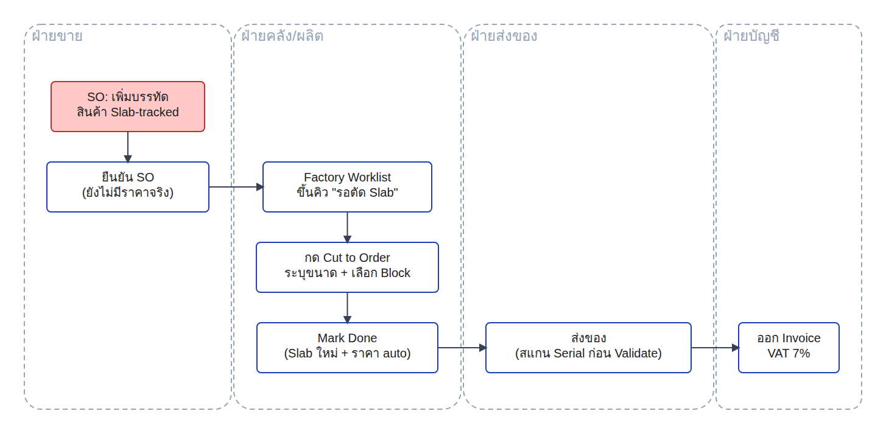
- ข้อมูลนำเข้า: คำสั่งซื้อจากลูกค้า Demo Customer - Grand Interior ต้องการหิน "Calacatta Gold" แบบแผ่น จำนวน 1 หน่วย
- กระบวนการ: ฝ่ายขายเปิดคำสั่งขายและเลือกสินค้าตัวเดียวกับที่ใช้ในโหมด 2 ได้เลย ระบบจะพิจารณาเองในขั้นตอนถัดไปว่าจะเลือกจากแผ่นที่มีอยู่แล้ว หรือต้องสั่งตัดใหม่ ตามที่มีของพร้อมขายจริงหรือไม่
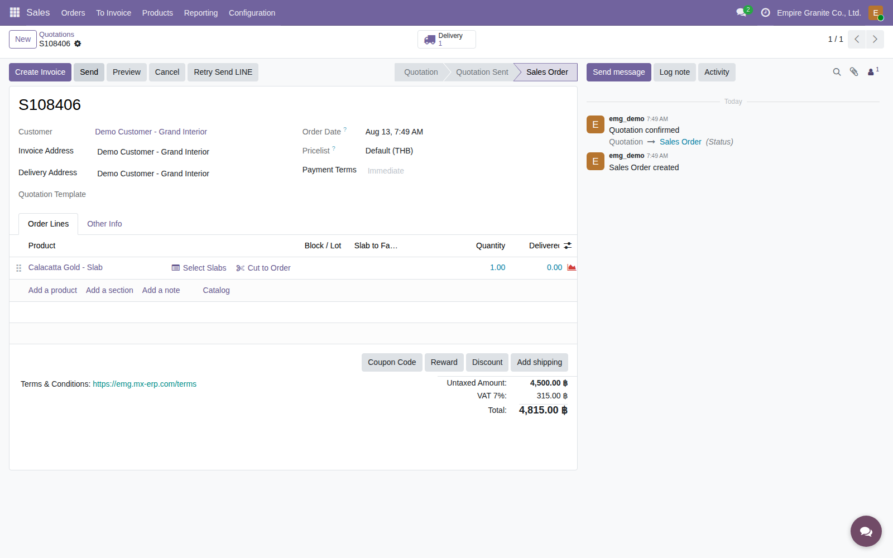
ผลลัพธ์: S108406 — ลูกค้า Demo Customer - Grand Interior สั่ง "Calacatta Gold - Slab" 1 หน่วย
ขั้นตอนที่ 2 / 8 · ฝ่ายขาย
ยืนยัน SO — ราคาที่เห็นตอนนี้ยังไม่ใช่ราคาจริง
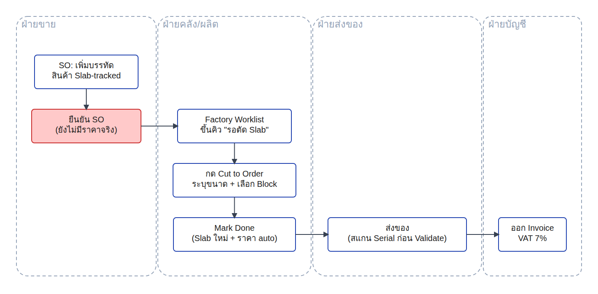
- ข้อมูลนำเข้า: คำสั่งขาย S108406 ที่ยังไม่ได้ยืนยัน สินค้ายังไม่ผูกกับขนาดแผ่นจริง
- กระบวนการ: ฝ่ายขายกดยืนยันคำสั่งขายได้ทันที โดยยังไม่ต้องทราบว่าจะตัดแผ่นขนาดเท่าใด ราคาที่แสดงในขั้นนี้เป็นเพียงราคาตั้งต้นของสินค้า ยังไม่ใช่ราคาจริง
ผลลัพธ์: ยืนยันแล้ว ยอดรวมขึ้น 4,815.00 บาท — เป็นราคาตั้งต้นของสินค้า ยังไม่ผูกกับขนาดแผ่นจริง ราคาจริงจะคำนวณใหม่อัตโนมัติหลังฝ่ายผลิตตัดแผ่นเสร็จ (ดูขั้นตอนที่ 6)
ขั้นตอนที่ 3 / 8 · ฝ่ายคลัง/ผลิต
Factory Worklist — คิวงานที่ขึ้นอัตโนมัติ ไม่ต้องรอฝ่ายขายบอก
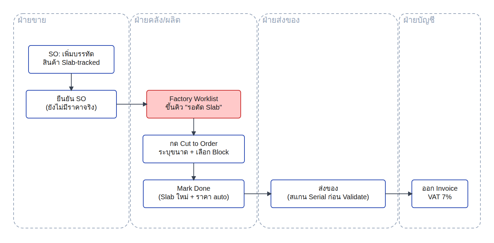
- ข้อมูลนำเข้า: คำสั่งขายที่ยืนยันแล้วแต่ยังไม่มีแผ่นหินจริงรองรับ
- กระบวนการ: ระบบรวบรวมคำสั่งขายเหล่านี้ขึ้นเป็นคิวงานอัตโนมัติที่หน้า Factory Worklist ให้ฝ่ายผลิตเข้ามาดูและดำเนินการได้ทันที โดยไม่ต้องรอฝ่ายขายแจ้งหรือเปิดเอกสารให้ดูทีละใบ — ฝ่ายขายจึงไม่ต้องเป็นผู้ตัดสินใจว่าจะตัดหินจากก้อนไหน
- อัปเดต 21 ส.ค. 2026: เพิ่มคอลัมน์ "ความพร้อม Block" ให้เห็นตั้งแต่หน้านี้เลยว่าแถวไหนพร้อมตัดได้ทันทีและแถวไหนต้องไปย้ายก้อนหินไปสถานีตัดก่อน — เดิมฝ่ายผลิตจะรู้ก็ต่อเมื่อกด Create Cut Order แล้วเจอข้อความแจ้งเตือนบล็อกไว้เท่านั้น (ดูขั้นตอนที่ 5)
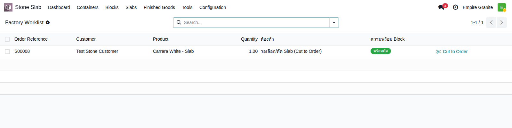
ผลลัพธ์: หน้า Factory Worklist — S00008 ขึ้นคิวพร้อมสถานะ "รอเลือก/ตัดแผ่น" คอลัมน์ "ความพร้อม Block" ขึ้นเขียว "พร้อมตัด" เพราะมีก้อนหินของวัสดุนี้อยู่ที่สถานีตัดแล้ว
ขั้นตอนที่ 4 / 8 · ฝ่ายคลัง/ผลิต
กด Cut to Order — เลือกก้อนที่จะตัด + ระบุขนาดที่ต้องการ
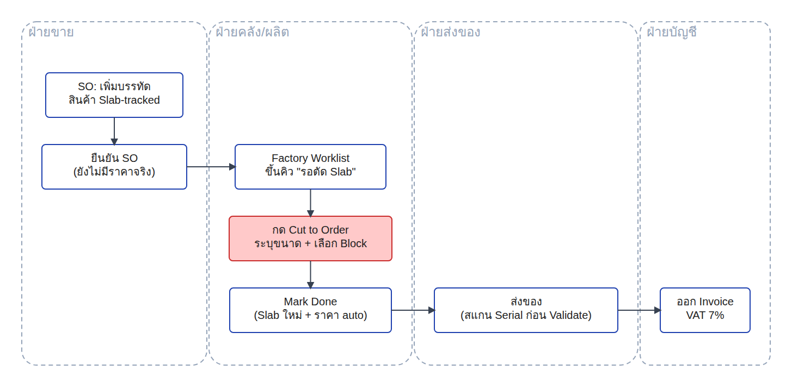
- ข้อมูลนำเข้า: คิวงานจาก Factory Worklist พร้อมก้อนหินที่มีอยู่ในสต็อก
- กระบวนการ: ฝ่ายผลิตเลือกก้อนหินที่จะตัดและระบุขนาดที่ต้องการเอง ระบบตรวจสอบอัตโนมัติว่าก้อนที่เลือกมีเนื้อหินเพียงพอก่อนสร้างใบสั่งผลิต และจะแจ้งเตือนหากมีแผ่นขนาดใกล้เคียงพร้อมขายอยู่แล้วในสต็อก เพื่อให้พิจารณาใช้ของที่มีอยู่ก่อนตัดใหม่
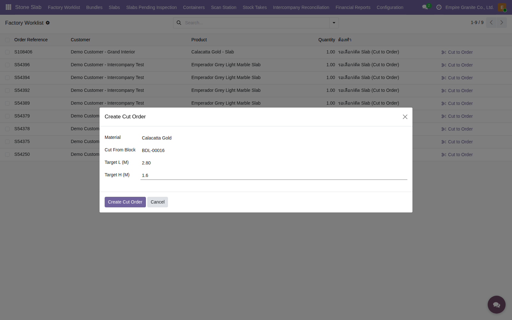
ผลลัพธ์: เลือกก้อน BDL-00016 ระบุขนาดที่จะตัด 2.80 × 1.60 ม. — ระบบยืนยันว่าก้อนนี้เหลือเพียงพอก่อนสร้างใบสั่งผลิต
ขั้นตอนที่ 5 / 8 · ฝ่ายคลัง/ผลิต
ก่อนตัดจริง ต้องย้าย Block ไปสถานีตัดก่อน (ปรับปรุงกระบวนการ 16 ส.ค. 2026)
พยายามกด Create Cut Order ก่อนย้าย Block
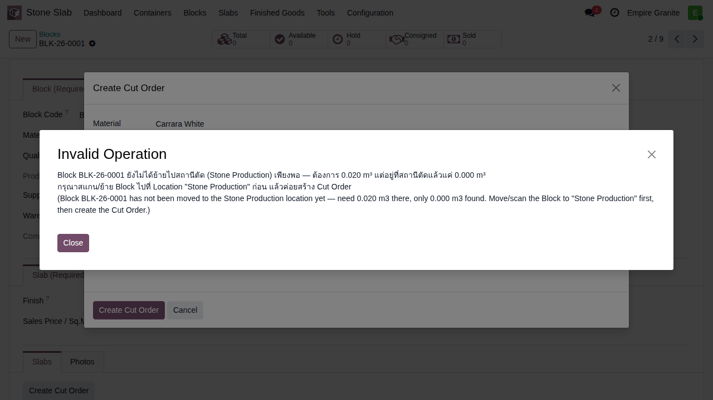
ย้าย Block ไปสถานีตัดเสร็จแล้ว
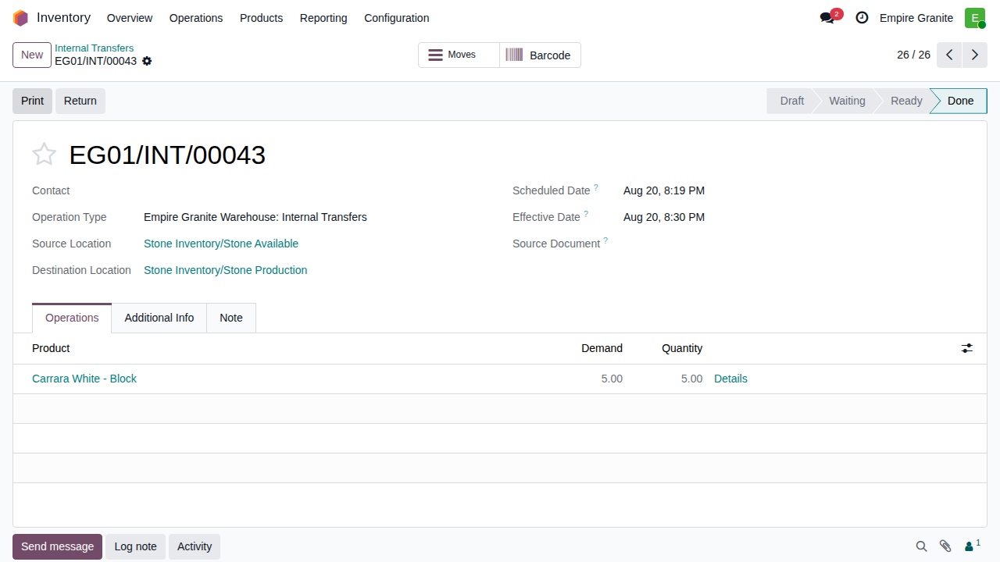
ขั้นตอนใหม่ (ปรับปรุง 16 ส.ค. 2026): ก่อนกด "Create Cut Order" ได้สำเร็จ ต้องย้ายก้อนหินจากคลัง "Stone Available" ไปยังคลัง "Stone Production" ก่อนเสมอ ผ่านใบโอนย้ายสินค้าภายใน — จำลองขั้นตอนหน้างานจริงที่ต้องยกก้อนหินไปวางที่แท่นตัดก่อนเริ่มงาน หากยังไม่ได้ย้าย ระบบจะปฏิเสธและแสดงข้อความแจ้งเตือนทันที ไม่สามารถสร้างใบสั่งผลิตข้ามขั้นตอนนี้ได้ ตัวอย่างจริง: ก้อน BLK-26-0001 ย้ายปริมาณ 5.00 ลบ.ม. ผ่านเอกสารโอนย้าย EG01/INT/00043
ขั้นตอนที่ 6 / 8 · ฝ่ายคลัง/ผลิต
ตัดจริง กด "Complete Cut" — ราคาคำสั่งขายคำนวณใหม่อัตโนมัติทันที
ใบสั่งผลิตเสร็จสิ้น
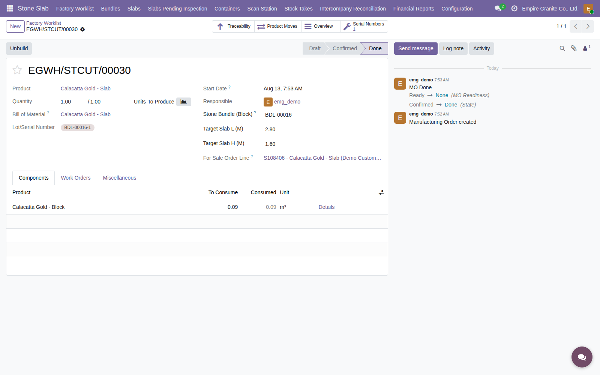
คำสั่งขายอัปเดตราคาอัตโนมัติ
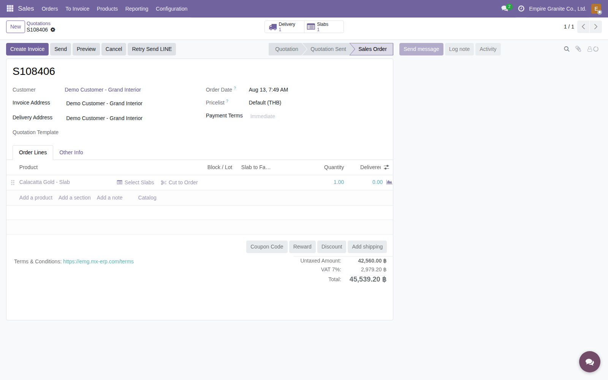
จุดสำคัญของโหมดนี้: เมื่อกด "Complete Cut" ระบบสร้างแผ่นหินใหม่พร้อมเลข Serial (BDL-00016-1) โดยอัตโนมัติ ผูกกับรายการในคำสั่งขายทันที และคำนวณราคาจากขนาดจริงที่ตัดได้ (2.80 × 1.60 ม. = 4.48 ตร.ม. × 9,500 บาท) ให้เองเป็น 42,560 บาท — ไม่ต้องกลับไปแก้ไขคำสั่งขายเองเหมือนโหมด 2 เพราะขนาดที่ตัดจริงถูกบันทึกเข้าคำสั่งขายให้อัตโนมัติทันทีที่ตัดเสร็จ
ขั้นตอนที่ 7 / 8 · ฝ่ายส่งของ
ส่งของ — ต้องสแกน Serial ยืนยันตรงแผ่นก่อน Validate ได้
พยายามยืนยันส่งของโดยยังไม่สแกน
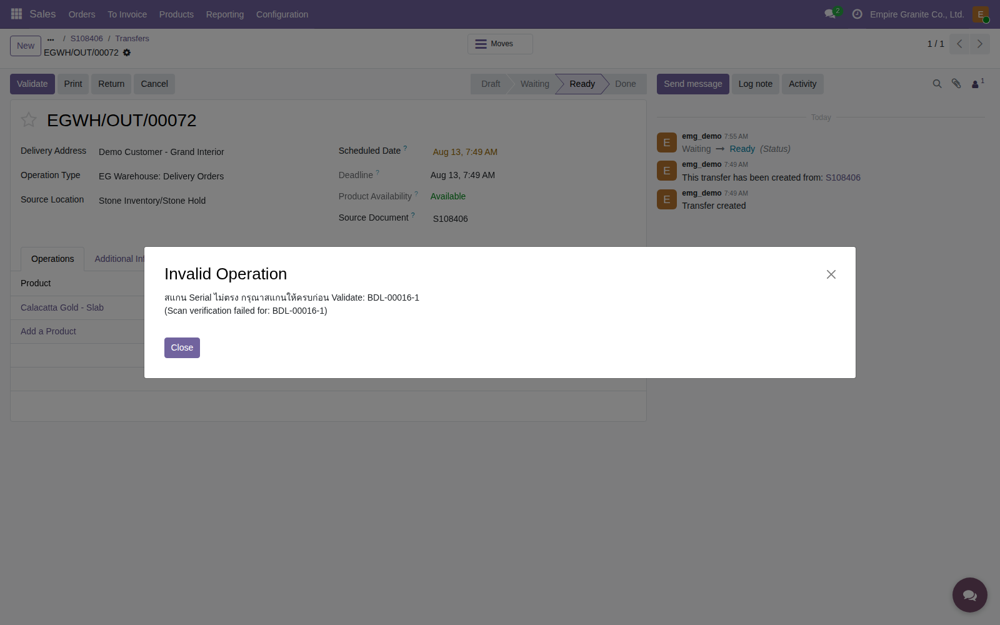
กรอกหมายเลข Serial ให้ตรงกับแผ่นจริง
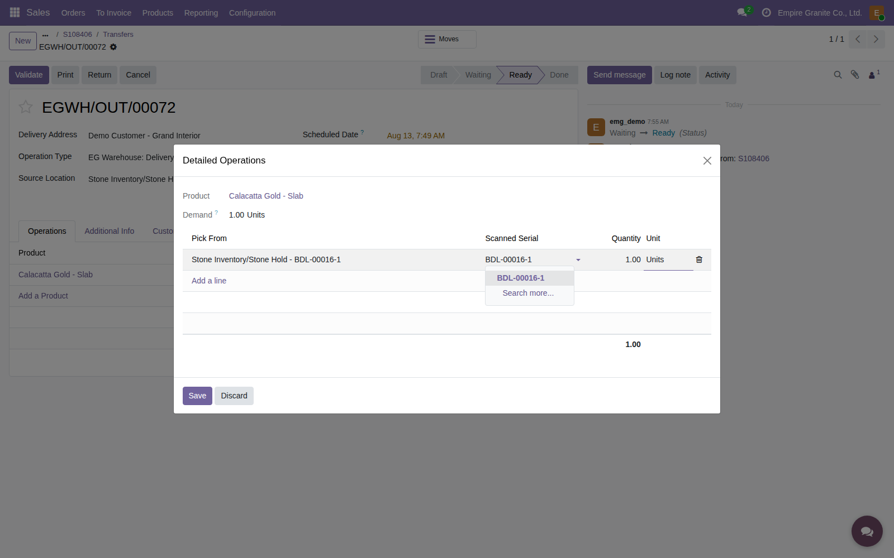
เช่นเดียวกับโหมด 2: แผ่นหินที่ตัดตามสั่งยังคงเป็นสต็อกแบบระบุหมายเลขเฉพาะ (Serial) เหมือนกัน — ระบบบังคับให้สแกนหรือกรอกหมายเลข Serial ให้ตรงกับแผ่นที่ตัดจริงก่อนยืนยันการส่งของเสมอ เพื่อป้องกันการส่งผิดแผ่นให้ลูกค้า
ขั้นตอนที่ 8 / 8 · ฝ่ายบัญชี
ออกใบแจ้งหนี้ — VAT 7% ตามปกติ
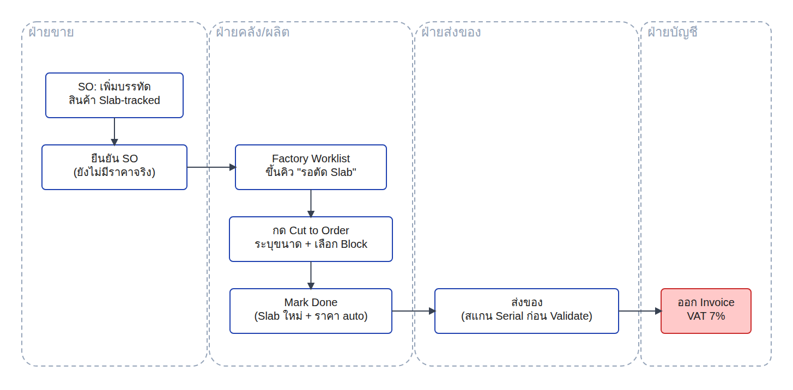
- ข้อมูลนำเข้า: ใบส่งของที่ดำเนินการเสร็จสมบูรณ์แล้ว พร้อมราคาที่คำนวณจากขนาดแผ่นจริงตอนตัดเสร็จ
- กระบวนการ: ฝ่ายบัญชีออกใบแจ้งหนี้ได้ทันทีหลังส่งของเสร็จ ราคาที่คำนวณไว้แล้วไหลเข้าใบแจ้งหนี้โดยอัตโนมัติ เหมือนโหมด 2 ไม่ต้องแก้ไขข้อมูลเพิ่มเติม
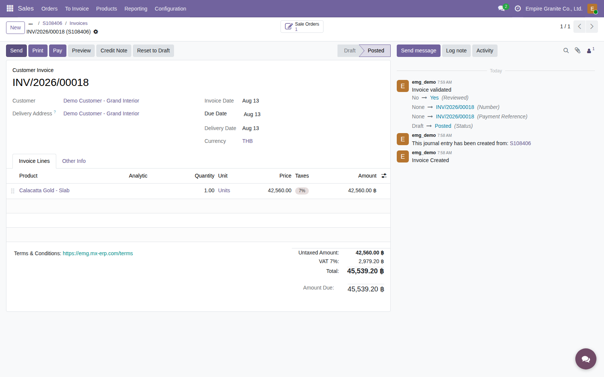
ผลลัพธ์: INV/2026/00018 — Posted ยอดรวม 45,539.20 บาท (รวมภาษีมูลค่าเพิ่ม 7%) ตรงกับราคาที่คำนวณอัตโนมัติหลังตัดแผ่นเสร็จ
สรุป
โหมด 3 ครบวงจร — 8 ขั้นตอน จากยืนยัน SO ถึงออกใบแจ้งหนี้
สิ่งที่ฝ่ายขายทำ
เปิดคำสั่งขาย เลือกสินค้าแผ่นหิน → ยืนยันได้ทันทีโดยยังไม่ต้องทราบขนาดที่จะตัด → จบหน้าที่ของฝ่ายขายตรงนี้ (ก้อนหินที่จะตัดมีอยู่แล้วในสต็อกจากกระบวนการรับหินเข้าคลัง)
สิ่งที่ฝ่ายผลิตทำ
ดูคิวงานที่หน้า Factory Worklist → ย้ายก้อนหินไปสถานีตัดก่อน → เลือกก้อนและระบุขนาดที่จะตัด → ตัดจริงและยืนยันเสร็จสิ้น
สิ่งที่ระบบทำให้อัตโนมัติ
รวมคิวงานที่หน้า Factory Worklist ให้อัตโนมัติ → สร้างแผ่นหินพร้อมหมายเลขเฉพาะผูกกับคำสั่งขายทันที → คำนวณราคาจากขนาดจริงที่ตัดได้ → ตรวจสอบหมายเลขแผ่นก่อนส่งของทุกครั้ง
เนื้อหาและภาพหน้าจอทั้งหมดจากการเดินระบบจริง ไม่ใช่ภาพจำลอง — ทดสอบจริงเมื่อวันที่ 13 สิงหาคม 2026 · ก้อน BDL-00016 (พร้อมอยู่แล้วในสต็อก) → คำสั่งขาย S108406 → ใบสั่งผลิต EGWH/STCUT/00030 → ใบแจ้งหนี้ INV/2026/00018